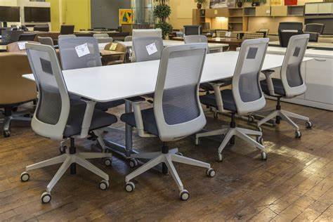

Steelcase

In the early 1930s, Metal Office made beds and other residential furniture for Doehler Manufacturing of New York. In 1937, the Metal Office was awarded the contract to produce the now-famous custom desks and chairs designed by architect Frank Lloyd Wright for the headquarters of S. C. Johnson & Company of Racine, Wisconsin. The wooden desk tops were sub-contracted to Stow & Davis, and the tubular steel components were sub-contracted to American Seating, both of Grand Rapids. Metal Office created the sheet metal components, finished them in Cherokee red [a color developed by Wright], and completed final assembly. In 1939, Metal Office began production of its first line of chairs.
In 1941, Metal office discontinued production of its metal roll-top desk, a popular model since 1914. Use of metal for civilian production was curtailed, but was more than replaced by orders from the U.S. Navy for shipboard furniture, including metal office furnishings, officer’s chairs, and even bunk beds and military chaplain’s pulpits. In fact, the Japanese surrender on the U.S.S. Missouri was signed atop a Steelcase mess table.
In the early 1950s, the grey “Multiple 15” line got a new look with mist green desert sage, autumn haze, and blond tan: colors inspired by the desert, known as “Sunshine Styling.” In 1952, the line was expanded with “Convertibles,” a system of flexible work surfaces, cabinets and tables. The design of the “Flightline” series introduced in 1956 was inspired by the look of new aerospace technology. The “1300 Line” introduced in 1959 and the “2200 Line” which succeeded it in the early 1960s were completely rectilinear, with polished steel frames, laminate writing surfaces, and convertible extension. Special furniture for data processing, called “Datacase,” went into production in 1961.